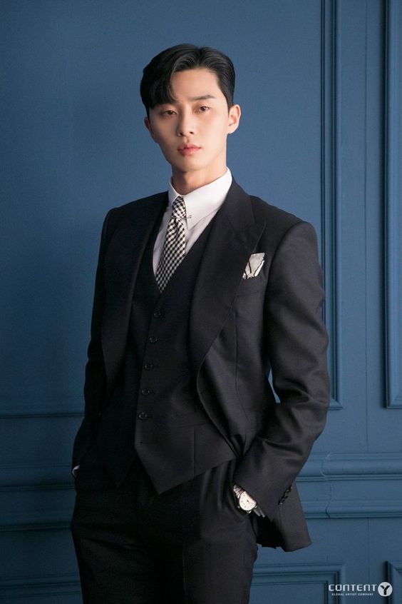
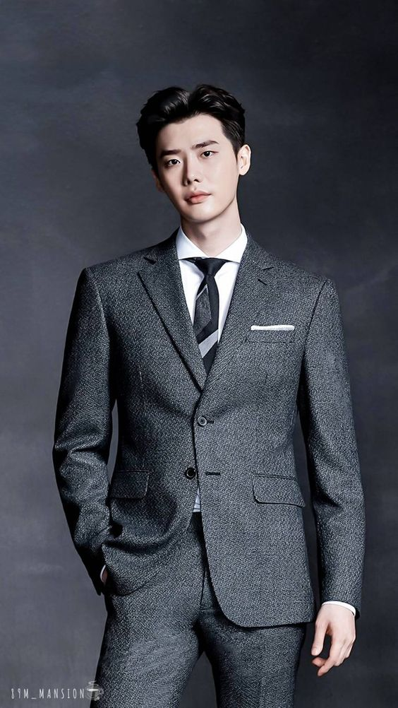
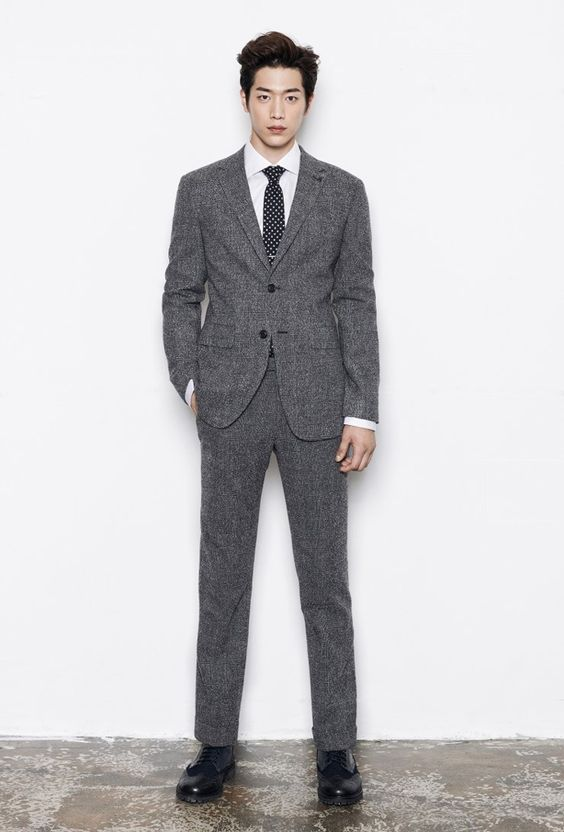
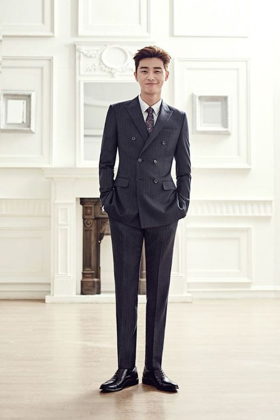
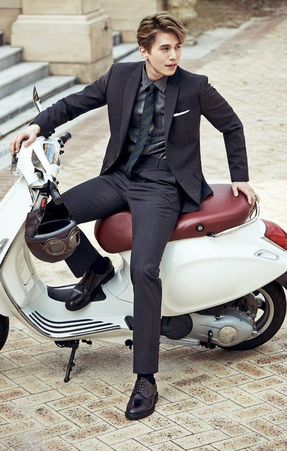
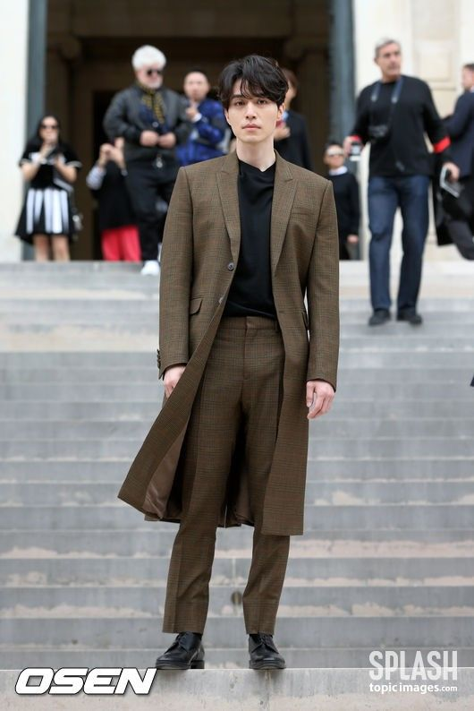

|
 ผู้ชายแต่งตัวไปออกงาน หลายๆคนมักจะจบที่สูทดำ เชิ้ตขาว เนคไทดำ แต่ตอนนี้งานแต่งงานส่วนใหญ่มักจะจัดเป็นธีม เพื่อให้แขกร่วมงานได้สนุกกับการคิดชุดให้เข้ากับงาน**************************** เริ่มลุคแรกกันด้วยธีมอุ่น ๆ สบายตาอย่าง “เอิร์ธโทน” ที่ไม่ว่าจะเป็นงานคอนเซปต์ไหน ๆ ก็สามารถนำเสื้อผ้าในสีโทนธรรมชาติแบบนี้มาประยุกต์ให้เข้ากับธีมได้เสมอ
ชุดไปงานแบบกางเกง์สีดำช่วยทำให้บุคลิกของคุณดูอบอุ่นและเป็นกันเองมากขึ้น เหมาะสำหรับสวมเป็นชุดไปงานแต่งสำหรับผู้ชายที่ต้องการสียีนส์มาก อย่าลืมมิกส์กับเสื้อเชิ้ตขาวเพื่อให้ลุคโดยรวมออกมาในโทนสว่าง  ชุดไปงานแต่งสำหรับผู้ชายสไตล์นี้คือการสวมยีนส์สีเข้มเข้ากับเสื้อยืดสบายๆ ดูไม่เป็นทางการมากนัก แต่ก็เพิ่มความสุภาพขึ้นมาด้วยสูทสีเทาเข้มทรงสวย แค่สวมสูทก็ช่วยให้คุณไปร่วมงานแต่งงานได้แบบชิลล์  เลือกยีนส์สีเข้มเข้ากับเสื้อเชิ้ต สวมทับด้วยสูทสีดำหรือเทาเข้ม เพิ่มความหล่อเนี้ยบตั้งแต่ศีรษะจรดปลายเท้า แน่นอนว่าเครื่องประดับอย่างแว่นกันแดดและรองเท้าก็ต้องเลือกสีเข้มด้วยนะ  ชุดไปงานแต่งผู้ชายลุคนี้มีทั้งความแคชช่วลและมินิมอลในตัวเอง เหมาะสำหรับการสวมเป็นชุดไปงานแต่งสำหรับผู้ชายที่ชอบความสบาย ๆ และไม่เป็นทางการ เพราะเราจะสวมเสื้อเชิ้ตสีขาวหรือเชิ้ตตามธีมสีของงานแต่งนั้น ๆ ปล่อยชายแบบสบาย ๆ ไม่เคร่งเครียด แมทช์กับยีนส์ตัวเก่งสีเข้ม ให้ลุคง่าย ๆ แต่ดูดี  อีกหนึ่งชุดไปงานแต่งสำหรับผู้ชายสวมยีนส์ที่แมทช์ได้ไม่ยาก มีความแคชช่วลแต่ก็เหมาะจะสวมใส่ไปร่วมงานสำคัญอย่างงานแต่ง เพราะเราเติมความเนี้ยบด้วยการแมทช์ยีนส์สีเข้มกับเชิ้ตเข้มและรองเท้าหนังสีเข้าชุดกัน  ชุดไปงานแต่งผู้ชายลุคนี้ให้บรรยากาศความเป็นนิวยอร์คเกอร์แบบเบา ๆ เหมาะกับงานที่จัดในโรงแรม ห้องจัดเลี้ยง หรือช่วงอากาศหนาว เพราะเราจะได้แมทช์ยีนส์ตัวโปรดกับเสื้อโค้ทเท่ ๆ สวมทับ โดยชุดข้างในเลือกสวมเป็นเชิ้ตหรือสเวตเตอร์ทับเสื้อเชิ้ตก็ได้ แต่อย่าเลือกสวมไปงานแต่งงานช่วงหน้าร้อน เปลี่ยนการสวมชุดไปงานแต่งผู้ชายแบบเสื้อเชิ้ตกางเกงยีนส์ธรรมดาให้เป็นทางการ และเหมาะสำหรับการสวมใส่เป็นชุดไปงานแต่งมากขึ้นด้วยเสื้อลายทางสีสันสดใสแต่ ่สุภาพอย่างลายสีขาว แมทช์กับเนคไทและกางเกงยีนส์สีอ่อนดูลุคสบายๆเรียบง่าย
|
|
|---|